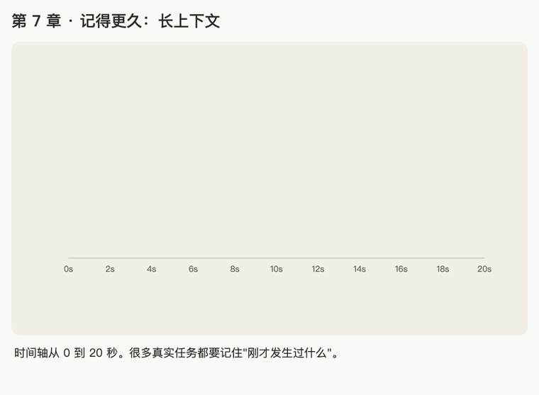

第 7 章 · 记得更久：从 6 秒到 19 秒的上下文
本章回答：WAM 的"记忆"是什么、为什么只有几秒？哪些任务必须记得更久？Long-WAM 怎么把上下文拉到 19.2 秒，代价是什么？
讲解日期：2026-11-20 · 上一章：第 6 章 慢想象、快动作 · 下一章：第 8 章 耦合强度这条轴
对应原文：调研报告 §3 P3 缺点（"视觉记忆短，约 6 s"）、§10.3；Long-WAM（arXiv 2610.10528，只读了摘要）
本章缩写：AR = AutoRegressive（自 / 回归，一块接一块往后生成）；KV = Key / Value（键 / 值）；GPU = Graphics Processing Unit（图形 / 处理 / 单元）。全部缩写见 附录 · 缩写与术语表
讲解
第一步：WAM 的"记忆"就是它能看到的上下文（2026-11-20）
类比：猜杯子游戏。 魔术师把球扣在左边杯子下，然后把杯子挪来挪去。你要找到球，靠的是记住几秒前那一幕。如果你只记得最后 5 秒，而球是 13 秒前扣进去的，就只能瞎猜。
WAM 没有单独的"记忆模块"。它的记忆就是上下文：条件 \(c\) 里放进去的历史帧（第 2、3 章）。放进去多少秒，就记得多少秒。
DreamZero 自述视觉记忆约 6 秒（调研报告 §3 P3 缺点），所以它本质上是 System 1：反应快，但记不住"刚才做到哪一步了"。
一句话：上下文有多长，记忆就有多长。
第二步：为什么上下文短（2026-11-20）
视频 token 多，而且随时长线性增长：
例子（编的数，只看比例）：假设每秒视频压成 500 个 latent token。
| 上下文 | 视频 token 数 | 相对 6 s |
|---|---|---|
| 6 s | 3000 | 1× |
| 19.2 s | 9600 | 3.2× |
\(19.2/6=3.2\)。token 多 3.2 倍，KV cache 也大 3.2 倍；如果是全注意力，计算量随 token 数的平方涨，最多到 \(3.2^2\approx10\) 倍。这就是各家不敢把上下文拉长的原因。
一句话：多记一秒，就多一秒的 token，全注意力下代价按平方涨。
第三步：哪些任务需要长记忆（2026-11-20）
- 被遮挡的东西：球在杯子下、零件被手挡住；
- 多步流程：叠衣服要记得已经折了左袖还是右袖；
- 动态目标：叠杯子时杯子在动，要从过去几秒的轨迹判断它往哪去；
- "刚才试过不行"：抓了一次滑掉，下一次要换个角度，前提是记得上一次失败了。
一句话：看不见的、做到一半的、在动的、失败过的，都要靠记忆。
第四步：Long-WAM 的做法和结果（2026-11-20）
Long-WAM（2026-10，作者含 Song Han、Linxi Fan；摘要）：
- 先自回归预训练视频底座：视频按时间一块接一块生成，每块只看前面的块（causal，因果注意力）。这样历史块的 KV 可以一直缓存着往后用，不用每次重算；
- 再接上动作：每个动作块都带着对未来视频 latent 的预测（仍是 P3 联合生成）；
- 上下文从 0 拉到 19.2 秒。
结果（摘要）：
| 指标 | 数字 |
|---|---|
| RoboCasa GR-1 成功率 | 上下文 0 → 19.2 s：63.3% → 78.7% |
| 动态叠杯（Unitree G1、YAM） | 95%；π0.5 和 Fast-WAM 都是 0/20 |
| 延迟 | RTX 5090 上每个动作块 107.4 ms（含未来视频预测） |
| 部署 | 还能跑在 DGX Spark、Jetson AGX Thor 上 |
注意 107.4 ms 是在单张消费级显卡上，比 DreamZero 的两块 GB200 便宜得多。因果结构加 KV 缓存是关键：历史只算一次。
一句话：因果预训练让历史能缓存，记忆拉长了，延迟没炸。
第五步：长上下文之外的另一条路（2026-11-20）
19 秒对"叠一件衣服"可能够，对"收拾一整间房"不够。更长的记忆有另一条路：不靠堆视频帧，而是把过去压成符号。
- AW-0 加一条"代码"流，把技能和进度存成程序（第 13 章）；
- Hi Robot 一类用语言做高层计划，低层 policy 只管当前几秒。
这就是常说的 System 2（慢思考、长记忆）补 System 1（快反应、短记忆）。
一句话：秒级记忆靠长上下文，分钟级以上靠代码或语言。
动画演示：记忆窗口够不够长

可交互版：animations/07-long-context.html（打开自动循环播放；点任一按钮切成手动）
怎么看：
- 第 3 秒球被扣进左杯，第 16 秒要找球（第一步的猜杯子类比）。
- 红色窗口 6 秒（10–16 s），够不到第 3 秒；绿色窗口 19.2 秒（截到 0 s），够得到。
- 底部蓝框：Long-WAM 的数字（第四步）。
练习与作答记录
题 1（第二步）：上下文从 6 秒拉到 12 秒，视频 token 多几倍？如果注意力代价按 token 数平方算，代价多几倍？
作答：（待作答）
题 2（第三步）：从你熟悉的场景里举一个"需要 1 分钟以上记忆"的机器人任务，说说只靠 19 秒上下文会在哪一步出错。
作答：（待作答）
题 3（第四步，拓展）：Long-WAM 用因果（causal）注意力，每块只能看前面的块。这对"把历史缓存起来"为什么重要？如果用双向注意力会怎样？
作答：（待作答）
口诀
记忆就是上下文，几秒就记几秒；
多记一秒多一秒 token，全注意力按平方涨；
因果预训练，历史只算一次；
秒级靠帧，分钟靠码。
本章复习卡片
C08 WAM 的记忆由什么决定，Long-WAM 靠什么把上下文拉长而延迟不炸。练习做完后，按答错、卡住的地方补上。
附录 · 延伸阅读
推荐阅读
| 读什么 | 读哪里 | 读它为了什么 |
|---|---|---|
| ★ Long-WAM（arXiv 2610.10528） | 方法和上下文长度消融 | 本章主角（只读了摘要） |
| ★ 调研报告 | §10.3、§9 开放问题"长程记忆" | 出处 |
| Genie 3 的介绍 | 记忆与一致性 | 视频世界模型里"几分钟一致性"的做法 |
| AW-0（arXiv 2610.30136） | 引言 | 用代码做长程记忆（第 13 章） |
数学原理
- 线性 vs 平方：token 数 \(N\) 随时长线性涨；全注意力的计算量 \(\propto N^2\)。
- 因果注意力 + KV 缓存：每个 token 只看前面的 token，前面 token 的 \(K,V\) 算好后不会再变，可以一直缓存。
公式清单
| 公式 | 意思 |
|---|---|
| \(N=r\cdot T\) | token 数 = 每秒 token 数 × 时长 |
| 代价 \(\propto N^2\) | 全注意力 |
本章无代码对照。